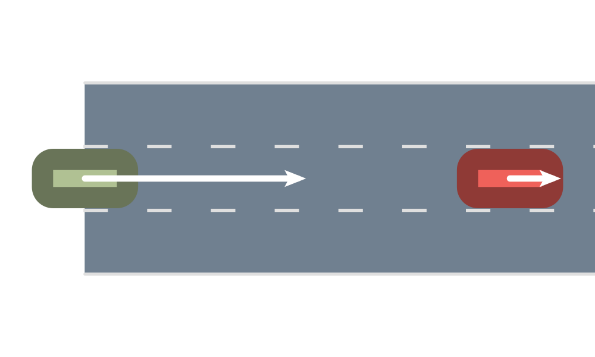

Feature Extraction

In this example we demonstrate how to extract feature from trajectories using AutomotiveSimulator
Load a Dataset First let's create a synthetic dataset.
using AutomotiveSimulator
using AutomotiveVisualization
using Random
roadway = roadway = gen_straight_roadway(3, 1000.0)
veh_state = VehicleState(Frenet(roadway[LaneTag(1,2)], 0.0), roadway, 10.)
veh1 = Entity(veh_state, VehicleDef(), "bob")
veh_state = VehicleState(Frenet(roadway[LaneTag(1,2)], 20.0), roadway, 2.)
veh2 = Entity(veh_state, VehicleDef(), "alice")
dt = 0.5
n_steps = 10
models = Dict{String, DriverModel}()
models["bob"] = Tim2DDriver(mlane=MOBIL())
set_desired_speed!(models["bob"], 10.0)
models["alice"] = Tim2DDriver(mlane=MOBIL())
set_desired_speed!(models["alice"], 2.0)
scene = Scene([veh1, veh2])
scenes = simulate(scene, roadway, models, n_steps, dt)
camera = SceneFollowCamera()
update_camera!(camera, scene)
snapshot = render([roadway, scene], camera=camera)
One can also load the data from the Stadium tutorial
load data from stadium tutorial
scenes = open("2Dstadium_listrec.txt", "r") do io
read(io, Vector{EntityScene{VehicleState, VehicleDef, String}})
endExtract features from a recorded trajectory Recorded trajectories are expected to be vectors of Scenes where each element correspond to one time step. To extract features, one can use the extract_features function which takes as input a list of feature we want to extract and the list of vehicle ids for which we want those features. For this example, let's first query two features, the longitudinal and lateral position of Bob, and whether or not Bob is colliding:
dfs = extract_features((posfs, posft, iscolliding), roadway, scenes, ["bob"])
dfs["bob"]| posfs | posft | iscolliding | |
|---|---|---|---|
| Float64 | Float64 | Bool | |
| 1 | 0.0 | 0.0 | 0 |
| 2 | 5.0 | 1.125 | 0 |
| 3 | 9.87927 | -0.046875 | 0 |
| 4 | 14.6473 | 0.673828 | 0 |
| 5 | 19.4804 | 0.438721 | 0 |
| 6 | 24.3905 | 0.0215149 | 0 |
| 7 | 29.3362 | -0.151073 | 0 |
| 8 | 34.3063 | -0.102489 | 0 |
| 9 | 39.2911 | -0.00740308 | 0 |
| 10 | 44.283 | 0.0338065 | 0 |
| 11 | 49.2788 | 0.0239052 | 0 |
To query features for all traffic participants we can just add their ID to the list:
dfs = extract_features((posfs, posft, iscolliding), roadway, scenes, ["bob", "alice"])
dfs["alice"]| posfs | posft | iscolliding | |
|---|---|---|---|
| Float64 | Float64 | Bool | |
| 1 | 20.0 | 0.0 | 0 |
| 2 | 21.0 | -1.125 | 0 |
| 3 | 21.6344 | 1.17188 | 0 |
| 4 | 21.9319 | 1.1543 | 0 |
| 5 | 22.2737 | 0.281982 | 0 |
| 6 | 22.6469 | -0.256622 | 0 |
| 7 | 23.1753 | -0.266132 | 0 |
| 8 | 23.9193 | -0.0700994 | 0 |
| 9 | 24.7785 | 0.0559875 | 0 |
| 10 | 25.7017 | 0.0612795 | 0 |
| 11 | 26.6627 | 0.0173043 | 0 |
The output is a dictionary mapping ID to dataframes. To learn more about DataFrames visit DataFrames.jl.
For the list of all possible features available see the documentation. Features are generally just function. AutomotiveSimulator provides some convenience to automatically generate feature function like distance_to_$x The distance_to function takes as input a vehicle ID and returns a function to extract the distance between the queried vehicle and the vehicle given to distance_to
distance_to("alice")distance_to_alice (generic function with 1 method)we can use this newly generated funciton in the feature extraction pipeline
dfs = extract_features((distance_to_alice, posfs), roadway, scenes, ["bob"])
dfs["bob"].distance_to_alice[1] # distance between Bob and Alice in the first scene.20.000000000000018This page was generated using Literate.jl.